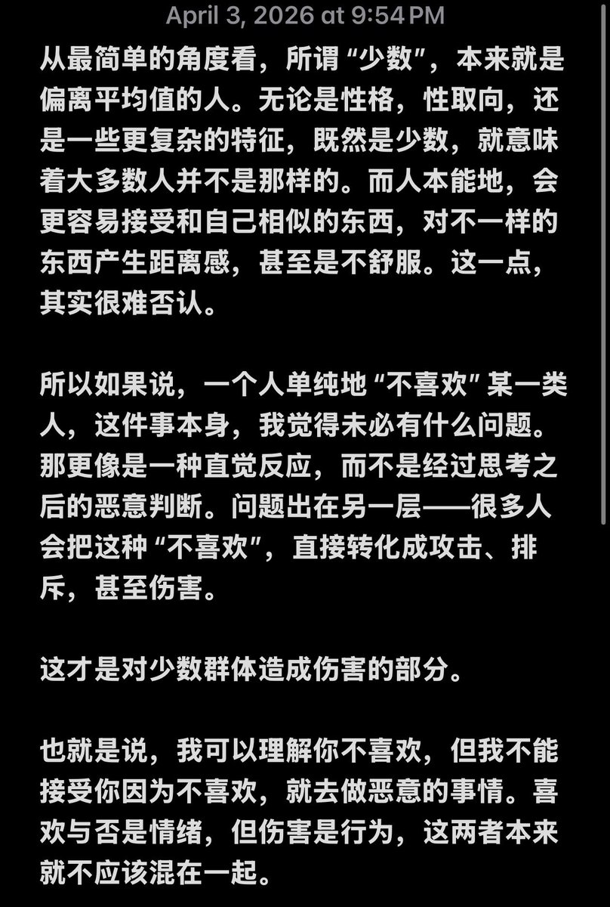
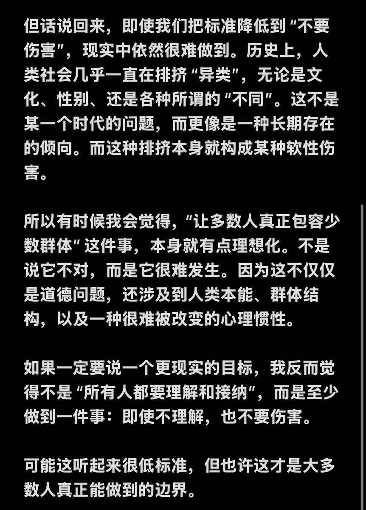

御坂 O.o 雪春📕 (掉fo版)（雪似梅花）
@0502railgun1949
当然不可能做到每个人都不歧视
立法能维持一种消极自由，难度很高
比如遏制实际的就业歧视，教育方面歧视等（难以界定和取证）
对仇恨犯罪加重处罚
或者去建立低门槛的申诉机制
或者是就是干脆激励企业去招募少数群体（dei法案）
遏制仇恨言论都很难界定，因为容易引发政府滥权


曦夜今天吃什么（蓝v互关寻找中）
@8964_xy11
我们总是在讲“包容少数群体”，但这件事本身，也许就有点不现实。 https://t.co/1C32jK5iWv